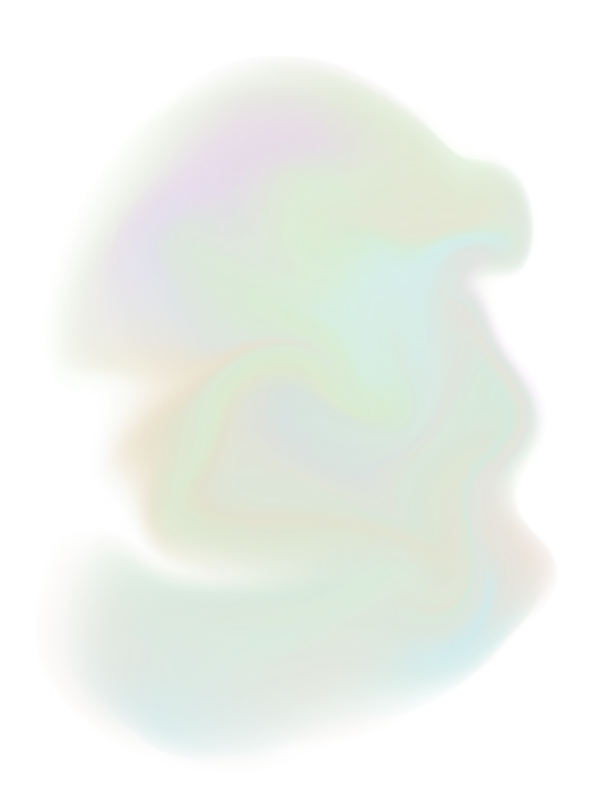
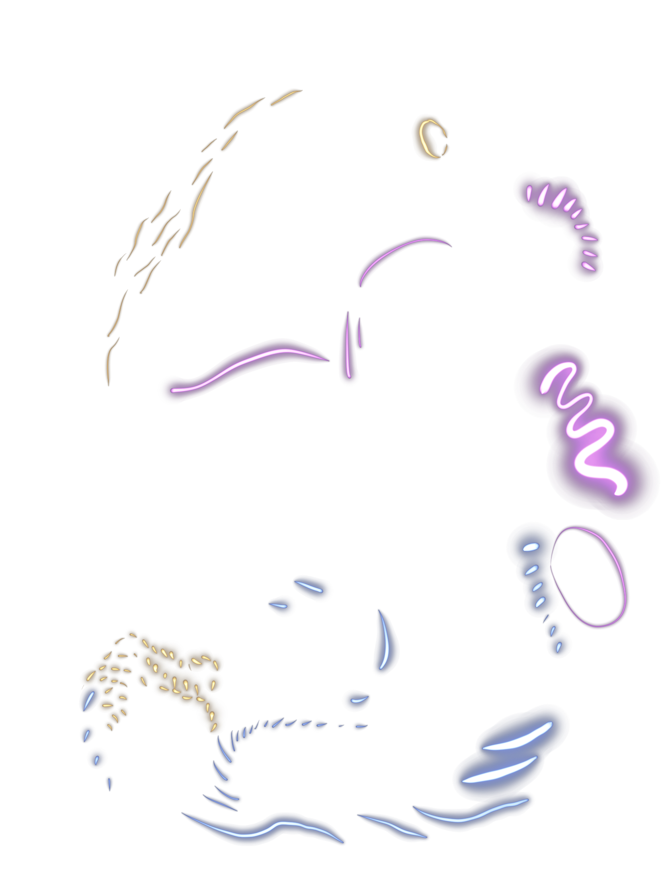

<!DOCTYPE html>
<html lang="en" dir="ltr">
  <head>
    <meta charset="utf-8">
    <title>lullabies for naps</title>
    <script src="https://cdnjs.cloudflare.com/ajax/libs/p5.js/1.0.0/p5.js" type="text/javascript"></script>

    <style media="screen">
      html, body{
        /* background: black; */
        background-image: url('nap1.png');
        background-size: 100px;
      }
      img{
        position: absolute;
        top:-150px;
        left:-100px;
      }
    </style>

  </head>
  <body>
    <!-- 
     -->
    <script type="text/javascript">
      let img;
      function setup() {
        img = loadImage('nap2 copy.png');
        img2 = loadImage('nap1.png')
    createCanvas(windowWidth, windowHeight, WEBGL);
  }

  function draw() {
    // background(250);
    texture(img);
    noStroke();
    rotateY(frameCount * 0.01);

    for (let j = 0; j < 3; j++) {
      push();
      for (let i = 0; i < 80; i++) {
        translate(
          sin(frameCount * 0.001 + j) * 100,
          sin(frameCount * 0.001 + j) * 100,
          i * 0.1
        );
        rotateZ(frameCount * 0.002);
        push();
        sphere(40, 30, 20);
        pop();
      }
      pop();
    }
    push();
    translate(mouseX-windowWidth/2, mouseY-windowHeight/ 2);
    texture(img2);
    plane(50, 50);
    pop();
  }

    </script>

  </body>
</html>
